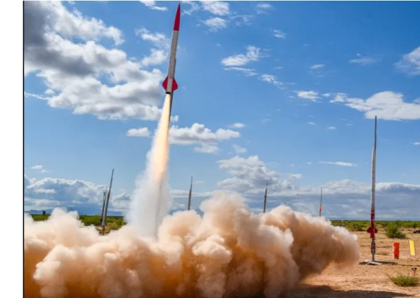
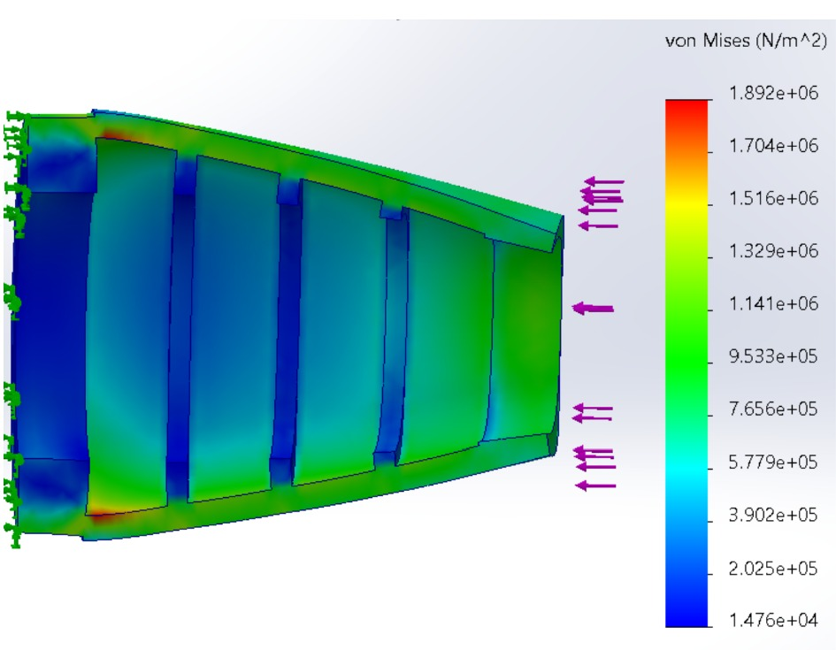
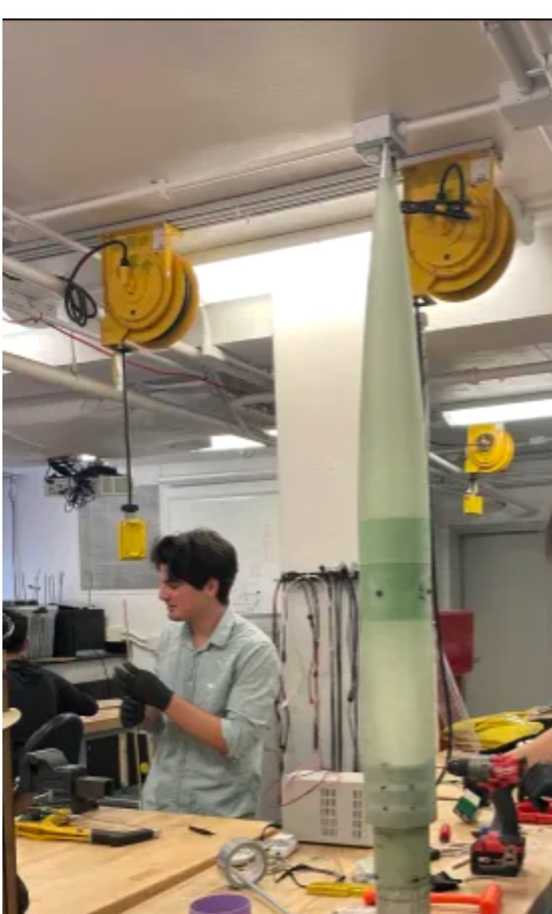
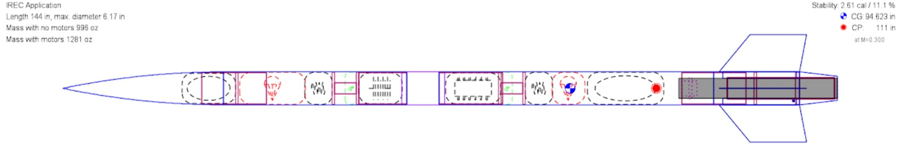
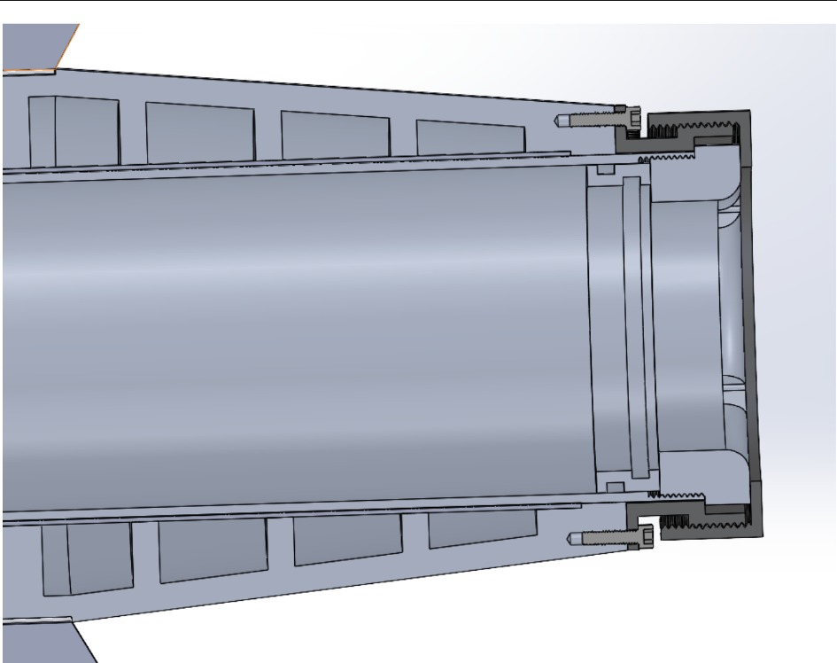

Penn High-Powered Rocketry · Structures
High-Powered Rocket Structures
Designing, analyzing, and manufacturing aerodynamic and structural hardware for competition rockets targeting altitudes above 10,000 feet.



Performance depends on the details that connect analysis to hardware.
High-powered rockets place demanding constraints on mass, stiffness, stability, packaging, manufacturability, and aerodynamic efficiency. My work on the structures team spans those interfaces—from system layout and structural analysis to custom aerodynamic hardware and hands-on vehicle assembly.
My contribution
- Designed an eight-inch boat tail integrating the motor-mount interface, external taper, and internal reinforcement.
- Evaluated design options including aluminum, fiberglass, PETG, and glass-reinforced printed structures.
- Built finite-element models using predicted launch loads to evaluate stress and deformation.
- Developed detailed CAD for fasteners, interfaces, clearances, and motor-retention hardware.
- Designed 3D-printable drill templates to improve radial hole spacing during fabrication.
- Supported fiberglass airframe manufacturing, hardware integration, and vehicle assembly.
Understanding the vehicle before cutting hardware.
The team used OpenRocket to evaluate component layout, mass, center of gravity, center of pressure, stability margin, recovery architecture, and motor selection before fabrication. This system model created a common reference for structural design decisions and helped identify how local component changes affected vehicle-level performance.

Reducing base drag within real packaging constraints.
I developed Penn Rocketry’s first boat-tail concept as a lightweight, low-cost aerodynamic structure around the motor mount. The eight-inch taper transitioned from the vehicle’s 6.17-inch outer diameter to a 4.45-inch aft diameter while preserving internal clearance for the motor case and retention hardware.
The design evolved beyond a simple shell. Internal ribs carried load, a lip aligned the structure with the lower body tube, and detailed interfaces accommodated fasteners and the motor-mount assembly. I compared manufacturing concepts across aluminum, fiberglass, printed PETG, and glass-reinforced printed construction, balancing heat exposure, stiffness, mass, cost, and schedule.

Testing whether the lightweight concept could carry launch loads.
A central design question was whether an additively manufactured boat tail could tolerate acceleration, aerodynamic loading, and local interface forces without excessive deformation or yielding. I translated predicted loads into a finite-element model, defined constraints at the structural interfaces, and evaluated the resulting von Mises stress distribution.
The analysis guided reinforcement placement and supported material and manufacturing decisions. Rather than treating FEA as a final screenshot, I used it as an iterative design tool to identify where geometry—not simply more material—could improve the load path.
Designing for the realities of fiberglass, fasteners, and assembly.
Rocket hardware has to be buildable. I worked on fiberglass airframes, bulkhead placement, motor-mount integration, and precision drilling while accounting for dust safety, tool access, fit, and repeatability. To solve the challenge of equally spaced radial holes, I designed a 3D-printable circular drill-template sleeve that converted a difficult manual layout task into a repeatable fixture.
Analysis informed hardware—and hardware informed better analysis.
This work strengthened my ability to move across the entire mechanical design cycle: vehicle-level requirements, aerodynamic concepts, detailed CAD, structural validation, material selection, manufacturing planning, fixtures, and physical integration. It also reinforced that the strongest design is not the one with the most sophisticated model—it is the one that can be analyzed, manufactured, assembled, and flown.